통신선로산업기사 (2019-10-12 기출문제)
1과목: 디지털전자회로
1. 다음 중 전원 정류회로의 리플 함유율을 적게 하는 방버으로 틀린 것은?
- 출력측 평활형 콘덴서의 정전용량을 작게 한다.
- 평활형 초크 코일의 인덕턴스를 크게 한다.
- 입력측 평활형 콘덴서의 정전용량을 크게 한다.
- 교류입력전원의 주파수를 높게 한다.
(정답률: 알수없음)

2. 다음 중 정류기의 평활회로에 사용되지 않는 것은?
- 콘덴서
- 저항
- 초크 코일
- 다이오드
(정답률: 80%)
3. 다음 3단자 전압 레귤레이터 IC 회로에서 직류 출력전압을 조절할 수 있는 파라미터가 아닌 것은? (단, Vreg = 1.25[V], IR1 = 5[mA], IADJ = 100[μA] 이다.)
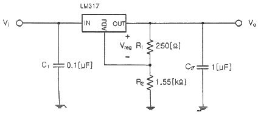
- R1
- R2
- C2
- Vreg
(정답률: 알수없음)
4. 차동증폭기의 두 입력전압에 각각 v1 = 7[mV], v2 = 5[mV]가 인가되었다. 차동전압 이득이 150이고 동상이득이 0.5일 때 출력전압은?
- 301[mV]
- 306[mV]
- 1,801[mV]
- 1,806[mV]
(정답률: 59%)
5. 다음 그림은 베이스 바이어스 회로이다. 동작점에서 VCE 전압은? (단, 베이스에미터 전압 VBE = 0.7[V] 이다.)
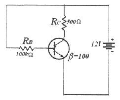
- 2.25[V]
- 6.35[V]
- 11.3[V]
- 12.0[V]
(정답률: 84%)
6. 다음 중 NPN 트랜지스터가 활성영역에서 동작한다고 할 때 바이어스 설명으로 옳은 것은?
- B-C는 순방향, B-E는 역방향으로 공급한다.
- B-C는 역방향, B-E는 순방향으로 공급한다.
- B-C는 순방향, B-E는 순방향으로 공급한다.
- B-C는 역방향, B-E는 역방향으로 공급한다.
(정답률: 80%)
7. 다음 중 저주파에서 고주파에 이르기까지 일정한 스펙트럼을 갖고 나타나는 잡음으로 알맞은 것은?
- 트랜지스터 잡음
- 자연잡음
- 백색잡음
- 지터잡음
(정답률: 알수없음)
8. 다음 발진기에서 자가 발진을 위한 전압이득 AV의 조건은?
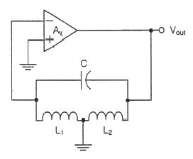
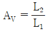
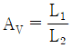
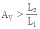
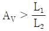
(정답률: 알수없음)
9. 다음 중 지속적인 출력을 내기 위한 발진기에 이용하는 원리는?
- 정궤환
- 부궤환
- 홀 효과
- 펠티에 효과
(정답률: 90%)
10. 다음 그림과 같은 원 브리지(Wien Bridge) 발진기에서 제너 다이오드의 역할은 무엇인가?
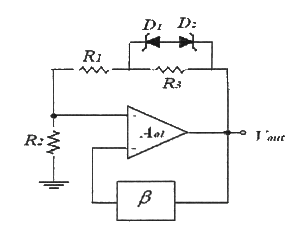
- 발진기의 출력전압을 제어하기 위한 것이다.
- 발진기의 초기시동을 위한 조건을 만든다.
- 폐루프 이득이 1이 되도록 한다.
- 궤환신호의 위상이 입력위상과 동상이 되도록 한다.
(정답률: 알수없음)
11. 다음의 파형은 디지털 변조 방식의 파형이다. 어느 방식의 파형인가?
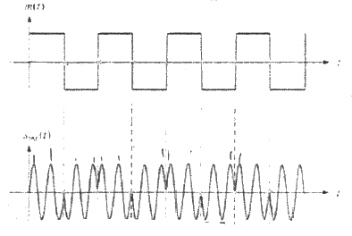
- ASK
- FSK
- PSK
- QAM
(정답률: 75%)
12. PCM 통신 방식에서 송신 과정으로 맞는 것은?
- 표본화 → 부호화 → 양자화 → 압축
- 표본화 → 양자화 → 부호화 → 압축
- 표본화 → 부호화 → 압축 → 부호화
- 표본화 → 압축 → 양자화 → 부호화
(정답률: 90%)
13. AM변조방식에서 변조도에 대한 설명으로 틀린 것은?
- 신호파의 최대값을 반송파의 최대값으로 나눈 값이다.
- 반송파의크기와 신호파의 크기에 따라 정해진다.
- 최대주파수편이와 신호주파수와의 비이다.
- 진폭변화의 정도를 나타낸다.
(정답률: 85%)
14. 900[kHz]의 반송파를 5[kHz]의 신호주파수로 진폭 변조한 경우 피변조파에 나타나는 주파수 성분이 아닌 것은?
- 895[kHz]
- 900[kHz]
- 9⑤[kHz]
- 910[kHz]
(정답률: 알수없음)
15. 다음 중 플립플롭(Filp-Flop)과 같은 동작을 하는 회로는?
- LC 발진기
- 수정 발진기
- 쌍안정 멀티바이브레이터
- 단안정 멀티바이브레이터
(정답률: 93%)
16. 다음 회로에서 입력되는 정현파의 최대 진폭이 6[V]일 때 출력에 나타나는 최대 진폭은? (단, RS = 200[Ω], RL = 400[Ω] 이다.)
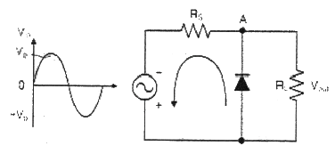
- 2[V]
- 4[V]
- 6[V]
- 8[V]
(정답률: 알수없음)
17. 다음 진리표를 간력화한 것으로 가장 적합한 논리회로는?
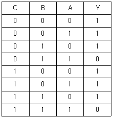
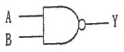
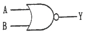
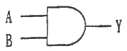
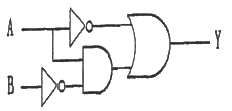
(정답률: 55%)
18. 다음 그림의 회로에 해당하는 논리기호는? (단, 정논리이다.)
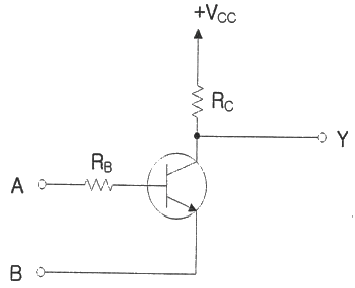
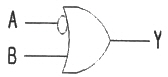
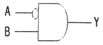
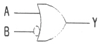
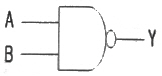
(정답률: 50%)
19. 다음 그림과 같이 2n개(0~7)의 10진수 입력을 넣었을 때, 출력이 2진수(000~111)로 나오는 회로의 명칭은?
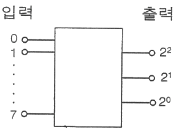
- 디코더 회로
- A-D 회로
- D-A 회로
- 인코더 회로
(정답률: 73%)
20. 다음 중 링 카운터에 대한 설명으로 틀린 것은?
- 클럭 신호를 받을 때 마다 상태가 하나씩 다음으로 이동한 카운터이다.
- 각각의 상태마다 한 개의 플립플롭을 사용하는 카운터이다.
- 디코딩게이틀르 사용해야만 디코딩할 수 있다.
- 시프트 레지스터의 마지막 단 출력을 첫 단에 궤환시킨다.
(정답률: 알수없음)
2과목: 유선통신기기
21. 전화기 DTMF 신호에 사용하는 주파수가 아닌 것은?
- 697[Hz]
- 941[Hz]
- 1,209[Hz]
- 1,503[Hz]
(정답률: 72%)
22. 송화기에서 탄소립의 열적인 팽창에 의하여 저항 또는 감도가 주기적으로 변하는 현상은 무엇인가?
- 응고 현상
- 탄소 잡음
- 호흡 현상
- 진동 현상
(정답률: 84%)
23. 일반적으로 전화기에서 사용되는 음성주파수 대역은 얼마인가?
- 200 ~ 2,000[Hz]
- 300 ~ 3,400[Hz]
- 400 ~ 5,000[Hz]
- 500 ~ 8,000[Hz]
(정답률: 100%)
24. 다음 중 MFC 방식에 대한 설명으로 적합하지 않은 것은?
- 선택된 버튼에 해당하는 주파수를 단일 주파수로 송출하는 방식이다.
- 주파수를 선로에 직접 송출시킨다.
- 오접속이 적으며 고속 접속이 가능하다.
- 푸시 버튼 및 발진 회로 등으로 구성되어 있다.
(정답률: 91%)
25. 교환기에서 TDS(시간분할방식) 통화로 구성방식의 특징이 아닌 것은?
- 통화로 및 제어부 모두 전자소자로 구성된다.
- SDS(공간분할방식)에 비해 점유며적이 넓다.
- 통화로의 다중화가 가능하다.
- 통화로의 신호는 디지털 신호이다.
(정답률: 100%)
26. ITU No.6 신호 방식에 대한 설명으로 옳지 않은 것은?
- 아날로그 방식의 신호 전송 속도는 9.6[kbps]이다.
- 공통선 신호 방식이다.
- 양방향으로 신호를 전송할 수 있다.
- 통화 중에서도 제어 신호를 전송할 수 있다.
(정답률: 알수없음)
27. 다음 중 전자교환기의 주요 구성요소에 속하지 않는 것은?
- 통화 회로망
- 중앙 제어장치
- 호 처리 기억장치
- 홈 위치 등록장치
(정답률: 알수없음)
28. 전자교환기의 통화회로에 의한 분류가 아닌 것은?
- 공간분할방식(SDS)
- 시간분할방식(TDS)
- 주파수분할방식(FDS)
- 파장분할다중화방식(WDM)
(정답률: 100%)
29. 국내의 광전송망에 적용되고 있는 STM-1급인 SMOT-1과 FLC, STM-4급인 SMOT-4 그리고 STM-16급인 SMOT-16에 대한 설명으로 틀린 것은?
- 광신호의 무중계 전송거리에 따라서 국사내용, 단거리용, 장거리용으로 구분한다.
- 광가입자 전송장치 FLC(Fiber Loop Carrier)의 광송수신 전송속도는 155.520[Mbps]이다.
- SMOT(Synchronous Multiplexer & Optical Terminal)-4 및 SMOT-16은 ADM(Add/Drop Multiplex) 망구성이 가능하다.
- SMOT-1 및 FLC는 ADM(Add/Drop Multiplex) 망구성이 가능하지 않다.
(정답률: 알수없음)
30. 다음 중 데이터 전송방식에서 병렬전송의 특성이 아닌 것은?
- 송신하고자 하는 비트블록의 비트 하나하나에 대응되는 전송선이 있다.
- 비트블록을 동시에 전송한다.
- 원거리 전송에 적합하다.
- 단위시간에 다량의 데이터를 전송할 수 있다.
(정답률: 92%)
31. 다음 중 동기식다중화 구조에서 가상상자를 여러 개 연합하여 그 결합된 용량을 하나의 가상상자로 간주하여 비트 순서가 보장되도록 처리해주는 것은 무엇이라 하는가?
- Concatenation
- Point Processing
- Mapping
- Aligning
(정답률: 91%)
32. 다음 중 PCM 전송방식에 관한 설명으로 맞지 않은 것은? (단, 음성주파수는 4[kHz])
- 표본화된 펄스는 PAM파이다.
- Sampling 주기는 짧을수록 충실도가 높아진다.
- PCM방식의 표본화란 입력의 통화 전류를 1초간에 6,000번 추출하는 것을 말한다.
- 표본화 오차는 표본화 시에 발생되는 엘리어싱을 말한다.
(정답률: 73%)
33. IP 주소로부터 MAC 주소를 얻는 기능은?
- ARP
- RARP
- UDP
- RTP
(정답률: 90%)
34. 멀티모드(MM), 광케이블 공사 시 아래 그림에 있는 광점퍼코드의 외피색과 규격으로 맞게 짝지어진 것은 무엇인가?
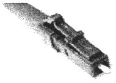
- 주황색 - SC
- 노란색 - LC
- 노란색 - ST
- 주황색 – LC
(정답률: 90%)
35. 다음 중 서로 다른 프로토콜을 사용하는 네트워크를 접속하기 위해 사용되며 OSI 참조모델의 모든 계층에 걸쳐 동작할 수 있는 장비는?
- 브리지
- 라우터
- 게이트웨이
- 스위치 허브
(정답률: 100%)
36. OSI 참조모델의 데이터링크 계층에서 동작하며 매체접근제어(MAC) 방식이 같거나 다른 LAN을 상호접속하여 주는 장치는?
- 리피터
- 브리지
- 라우터
- 게이트웨이
(정답률: 70%)
37. 코어 및 클래드의 직경이 각각 50[μm], 125[μm] 광섬유에서 코어의 굴절률이 1.48이고, 클래드 굴절률차(△)가 1.3[%] 일 때 개구수(NA)는 약 얼마인가?
- 0.149
- 0.239
- 0.349
- 0.539
(정답률: 50%)
38. 다음 중 고전압의 유입을 저지하며 회로의 병렬접속 형태로 설치하는 보안장치는?
- 퓨즈
- 열선륜
- 피뢰기
- 유도선륜
(정답률: 알수없음)
39. 레벨미터법에 의한 통화 감쇠량의 측정에서 측정회로를 몇 [Ω]으로 종단시켜야 하는가?
- 50[Ω]
- 75[Ω]
- 300[Ω]
- 600[Ω]
(정답률: 91%)
40. 신호원의 저항 zS = 400이고 zR = 600인 선로를 접속할 경우 부정합 감쇠량은 약 얼마인가?
- 9.54[dB]
- 13.97[dB]
- 20[dB]
- 23.85[dB]
(정답률: 알수없음)
3과목: 전송선로개론
41. 다음 중 임피던스 정합 조건에 대한 설명으로 틀린 것은?
- 부하에 최대 전력 전송 조건을 의미한다.
- 내부 임피던스와 부하 임피던스는 같다.
- 위상이 동위상이어야 한다.
- 공액 복소수를 취한다.
(정답률: 알수없음)
42. 다음 LAN의 특징과 거리가 먼 것은?
- 광대역 전송 매체의 사용으로 고속통신이 가능하다.
- 망 내에서 호스트간 통신은 게이트웨이를 거쳐야 한다.
- 하나의 회선을 공동으로 이용하는 방식이다.
- LAN망에 연결된 모든 기기와 통신이 가능하다.
(정답률: 알수없음)
43. 반사계수가 0.1인 전송로의 부정합 감쇠량은 몇 [dB]인가?
- 10
- 20
- 30
- 40
(정답률: 73%)
44. 북미표준의 동기식 광전송망인 SONET(Synchronous Optical Network)에서 STS-1(Synchronous Transport Signal-1)의 전송속도는?
- 51.840[Mbps]
- 155.520[Mbps]
- 466.560[Mbps]
- 622.080[Mbps]
(정답률: 30%)
45. 7[bit] 코드에 1개의 Start-bit와 2개의 Stop-bit를 추가하면 전송효율은?
- 60[%]
- 70[%]
- 75[%]
- 80[%]
(정답률: 알수없음)
46. 비동기식 전송방식에 대한 설명 중 틀린 것은?
- 시작 및 정지 비트가 존재한다.
- 수신측 버퍼가 필요 없다.
- 휴지 시간(Idle Time)이 존재한다.
- 전송성능이 좋고, 대역폭 효율이 높다.
(정답률: 알수없음)
47. 다음 중 동축케이블의 특성이 아닌 것은?
- 중심 도체저항이 크다.
- 광대역 다중화가 가능하다.
- 전송손실이 적다.
- 고주파 누화특성이 양호하다.
(정답률: 73%)
48. 다음 중 정상적인 동축케이블의 절연저항 값이 0[Ω]인 경우는?
- 동축케이블 송·수신 양측 내부도체 간의 절연저항 값
- 동축케이블 내부도체와 외부도체 간의 절연저항 값
- 이격 설치된 두 동축케이블 선로 간의 절연저항 값
- 동축케이블 내부도체와 절연물질 간의 절연저항 값
(정답률: 82%)
49. 국내에서 사용하고 있는 통신용 동선케이블의 심선경에 해당되는 것은?
- 0.4[mm], 0.5[mm], 0.65[mm], 0.9[mm]
- 0.5[mm], 0.6[mm], 0.7[mm], 0.9[mm]
- 0.4[mm], 0.65[mm], 0.8[mm], 1.3[mm]
- 0.5[mm], 0.6[mm], 0.8[mm], 1.3[mm]
(정답률: 100%)
50. 광섬유는 코어와 클래드(Clad)로 구성되는데, 이들의 굴절률에 대한 설명으로 맞는 것은?
- 클래드가 코어보다 굴절률이 높다.
- 클래드가 코어의 굴절률이 같다.
- 코어가 클래드보다 굴절률이 높다.
- 코어가 클래드의 굴절률보다 낮다.
(정답률: 92%)
51. 광통신 소자로 높은 역 바이어스 전압(30V 이상)이 필요한 단점이 있지만 수신감도가 매우 우수하며 고속 장거리에 사용되는 수광 소자는?
- LD(Laser Diode)
- LED(Light Emitting Diode)
- PIN-PD(PIN Photo Diode)
- APD(Avalanche Photo Diode)
(정답률: 90%)
52. 광통신에서 사용되는 광검출기의 특성이 아닌 것은?
- 동작파장에서 반응도가 커야 한다.
- 민감도가 좋아야 한다.
- 신뢰성이 좋아야 한다.
- 동작범위가 좁아야 한다.
(정답률: 알수없음)
53. 다음 중 계단형 다중모드 광섬유의 특징으로 잘못된 것은?
- 빛은 코어내를 전반사하며 진행한다.
- 모드간 분산의 영향이 크다.
- 코어중심축으로부터의 반지름 거리에 따라 굴절률이 변한다.
- 코어내의 굴절률 분포가 균일하다.
(정답률: 100%)
54. 광통신에서 광수신기 성능에 영향을 미치지 않는 것은 무엇인가?
- 소광비
- 강도잡음
- 타이밍지터
- 처핑
(정답률: 84%)
55. 광케이블링 시스템을 구현하고자 한다. 광선로 채널 손실 값은? (단, 케이블 길이 10[km](0.25[dB/km]), 케이블 접속점 2개소(0.1[dB/개소]), 커넥터 접속점 2개소(0.3[dB/개소])이다.)
- 1.75[dB]
- 16.5[dB]
- 3.3[dB]
- 33[dB]
(정답률: 84%)
56. 광케이블 포설시 작업환경이나 지하관로 여건 등을 고려하여야 하는데, 일반적으로 국내에서 사용되고 있는 광케이블 포설공법이 아닌 것은?
- 견인포설공법
- 공압포설공법
- 수압포설공법
- 양방향포설공법
(정답률: 알수없음)
57. 다음 중 구내통신설비의 구내배관 설치에 관한 설명으로 잘못된 것은?
- 배관의 내경은 배관에 수용되는 케이블 단면적의 총 합계가 배관단면적의 32[%] 이하가 되도록 한다.
- 배관의 곡률반경은 배관내경의 6배 이상으로 한다.
- 배관 1구간의 굴곡개소는 5개소 이상 이어야 하며, 1개소의 굴곡각도는 60° 이내로 한다.
- 배관은 선로를 보호할 수 있는 기계적 강도를 가진 내부식성 금속관 또는 KSC8454 등등 규격 이상의 합성 수지제 전선관을 사용하여야 한다.
(정답률: 91%)
58. 아날로그 잡음전압측정기의 전압레인지를 20에 두었을 때 지시값이 0.8[mV]이면 실제의 잡음전압값은?
- 26[mV]
- 16[mV]
- 2.6[mV]
- 1.6[mV]
(정답률: 75%)
59. 광섬유를 OTDR로 측정시 2[mW]의 광을 입사하여 되돌아온 광전력을 OTDR로 측정한 결과 1[mW]가 나왔다. 이 광섬유의 손실은 얼마인가?
- 약 0.5[dB]
- 약 1[dB]
- 약 1.5[dB]
- 약 2.1[dB]
(정답률: 80%)
60. 선로 감쇠량을 측정하기 위해서 송단의 입력 레벨은 30[dBm]이며, 수단 출력 레벨은 15[dBm]이 측정되엇다. 이때의 감쇠량은 얼마인가?
- 5[dBm]
- 15[dBm]
- 25[dBm]
- 35[5
(정답률: 100%)
4과목: 전자계산기일반 및 선로설비기준
61. 마이크로프로세서 병렬 처리에서 단계로써 맞는 것은 무엇인가?
- Fetch – Execute – Decode - Write
- Execute – Decode – Fetch - Write
- Fetch – Decode – Execute - Write
- Decode – Execute – Fetch – Write
(정답률: 알수없음)
62. 이것은 CPU를 구성하는 하드웨어 중 명령어 실행에 반드시 필요한 핵심 모듈로서 명령어 파이프라인들로 이뤄진 슈퍼스칼라 모듈과 ALU 및 레지스터 집합 등을 의미하기도 한다. 최근 이와 같은 것을 하나의 칩에 여러 개 넣은 것들이 출시되고 있다. 여기서 '이것이' 의미하는 것으로 옳은 것은?
- 스칼라
- 캐쉬(Cache)
- 파이프라인
- 코어(Core)
(정답률: 82%)
63. 다음은 CPU에 서비스를 받으려고 도착한 순서대로 프로세스와 그 서비스 시간을 나타낸다. FCFS(First Come First Served) CPU Scheduling 에 의해서 프로세스를 처리한다고 했을 경우 프로세스의 평균 대기 시간은 얼마인가?
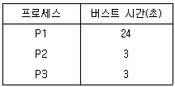
- 15초
- 16초
- 17초
- 18초
(정답률: 알수없음)
64. 다음 중 어셈블리 명령어(MOV R0, R1)에 대한 설명으로 옳은 것은?
- 레지스터간 R0, R1 데이터의 덧셈 수행
- R0, R1을 스택에 저장
- R1을 R0 번지에 저장
- 레지스터 R1의 데이터를 R0로 이동
(정답률: 85%)
65. 디스크 시스템의 성능과 신뢰성을 향상시키기 위해서 디스크 드라이브의 배열을 구성하여 하나의 유니트로 패키지 함으로써 액세스 속도를 크게 향상시키고 신뢰도를 높인 것을 무엇이라 하는가?
- 자기 디스크 장치
- RAID(Redundant Array of Inexpensive Disks)
- 자기 테이프 장치(Magnetic Tape Unit)
- 램 디스크 장치(RAM Disk Unit)
(정답률: 70%)
66. 다음 중 데드락(Deadlock)을 발생시키는 원인이 아닌 것은?
- 점유와 대기(Hold and Wait)
- 순환 대기(Circular Wait)
- 상호 배제(Mutual Exclusion)
- 선점 방식(Preemption)
(정답률: 84%)
67. 다음 중 선점 스케줄링 방식에 대한 설명으로 틀린 것은?
- 빠른 응답을 요구하는 시분할 시스템에 적합하다.
- 우선순위가 높은 프로스세들이 빠르게 처리될 수 있다.
- 일단 프로세서를 할당 받으면 완료될 때까지 점유한다.
- 오버헤드가 발생한다.
(정답률: 알수없음)
68. 다음 중 가상기억(Virtual Memory) 체계에 대한 설명으로 틀린 것은?(오류 신고가 접수된 문제입니다. 반드시 정답과 해설을 확인하시기 바랍니다.)
- 하드웨어에 의한 것이 아니라 소프트웨어에 의해 실현된다.
- 주기억장치와 보조 기억 장치가 계층 기억 체제를 이루고 있다.
- 컴퓨터의 속도를 개선하기 위한 방법이다.
- 컴퓨터의 기억 용량을 확장하기 위한 방법이다.
(정답률: 64%)
69. Shift Register에 있는 이진수 Number 가 5번 Shift-left 되었을 때 결과값으로 알맞은 것은?
- Number * 5
- Number / 5
- Number * 32
- Number / 32
(정답률: 50%)
70. 다음과 같은 운영체제의 운용 기법은?
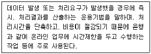
- 단일 사용자 시스템
- 실시간 처리 시스템
- 분산처리시스템
- 시분할 시스템
(정답률: 82%)
71. 다음 중 과학기술정보통신부장관이 기간통신사업자를 허가할 때 종합적 심사사항에 해당하지 않는 것은?
- 기간통신역무 제공계획의 이용에 필요한 재정적 능력
- 기간통신역무 제공계획의 이용에 필요한 기술적 능력
- 이용자 보호계획의 적정성
- 정보화촉진계획의 타당성 및 발전방향
(정답률: 알수없음)
72. 다음 중 “지능형 홈네트워크 설비 설치 및 기술기준”에서 규정한 공동주택에 홈네트워크를 설치하는 경우 갖추어야 할 설비가 아닌 것은?
- 홈네트워크망
- 홈네트워크장비
- 원격제어기기 및 감지기
- TV 공시청안테나
(정답률: 100%)
73. 정보통신공사를 마치고 정보통신설비를 사용하기 위해 특별자치시장(특별자치도지사·시장·군수·구청장)으로부터 받아야 하는 것은?
- 사용전 점검
- 사용전 검사
- 사용승인검사
- 사용인증점검
(정답률: 알수없음)
74. 교환설비, 단말장치 등으로부터 수신된 방송통신콘텐츠를 변환, 재생 또는 증폭하여 유선 또는 무선으로 송신하거나 수신하는 설비를 무엇이라 하는가?
- 선로설비
- 전송설비
- 교환설비
- 전원설비
(정답률: 100%)
75. 다음 중 정보통신공사업법에서 정하는 통신선로설비공사시 통신케이블설비에 포함되지 않은 것은?
- 통신구
- 광섬유
- 동축케이블
- 전주
(정답률: 60%)
76. 정보통신공사업법 시행령에서 정하는 감리원의 자격 등급에 해당되지 않는 것은?
- 상급감리원
- 고급감리원
- 중급감리원
- 초급감리원
(정답률: 91%)
77. 전기통신을 행하기 위한 송·수신 장소간의 통신로 구성설비로서 전송·선로설비, 교환설비 및 부속설비를 무엇이라 하는가?
- 전기통신회선설비
- 정보통신회선설비
- 자가전기통신설비
- 사업용전기통신설비
(정답률: 알수없음)
78. 방송통신서비스를 제공받기 위하여 이용자가 관리·사용하는 “이용자 방송통신설비”에 해당하지 않은 것은?
- 예비전원설비
- 구내통신선로설비
- 이동통신구내선로설비
- 방송공동수신설비
(정답률: 90%)
79. 공사를 감리한 용역업자는 그가 감리한 공사의 준공설계도서를 언제까지 보관하여야 하는가?
- 하자담보책임 기간
- 사용전검사 기간
- 설계변경 기간
- 준공검사 기간
(정답률: 알수없음)
80. 국선과 구내간선케이블 또는 구내케이블을 종단하여 상호 연결하는 통신용 분배함을 무엇이라 하는가?
- 국선단자함
- 중계분배함
- 선로분배함
- 구내분배함
(정답률: 알수없음)
전원 정류회로에서 평활형 콘덴서는 고주파 잡음을 제거하고 전압을 안정화하는 역할을 합니다. 따라서 출력측 평활형 콘덴서의 정전용량을 작게 함으로써 리플 함유율을 줄일 수 있습니다.
평활형 초크 코일의 인덕턴스를 크게 하거나 교류입력전원의 주파수를 높이는 것도 리플 함유율을 줄이는 방법이지만, 입력측 평활형 콘덴서의 정전용량을 크게 하는 것은 오히려 리플 함유율을 높일 수 있습니다. 이는 입력측 콘덴서의 큰 정전용량으로 인해 리플 전류가 증가하기 때문입니다.